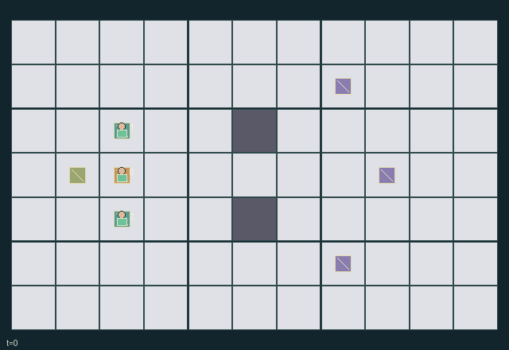

GI145 · Breathshare Claims

Original recording scope: Role view · Mode: Fixed-script demonstration
Additional generated state replay (different trajectory / full-state debug)

Bring finite ore to (1,3). Each miner privately values one randomly assigned ore type; all share delivery benefits and survival losses. Maintain oxygen using two portable canisters and finite shared station stock.
Identity and original contract
3 independently actionable roles; 10 discrete commands per role; 153 native observation columns per role; original horizon 80 steps. Declared per-step reward range: -1.0 to 2.0. Observation regime: partially_observable.
Source SHA-256: aa5903c6cb30959ab9fd8def84eb0a7688a47ac2f0bad8105671f7e765f1ff4c
The objective, rewards, population, map and horizon remain original. A preview is not a success claim.
Objective and gameplay
Bring finite ore to (1,3). Each miner privately values one randomly assigned ore type; all share delivery benefits and survival losses. Maintain oxygen using two portable canisters and finite shared station stock.
Shared veins are depleted by extraction; the station admits one occupant; a portable canister moves only through physical pickup/drop or simultaneous adjacent Offer/Accept consent. Resource transfers and station occupation change other miners feasible trip lengths and delivery payoffs.
- Three miners each receive one private ore-type claim sampled as a permutation at reset. Claim labels are visible only to their owner.
- Every living miner outside (1,3) consumes one oxygen at the end of each call. Zero oxygen kills the miner; dead roles retain only Wait.
- Veins at (7,1), (8,3), (7,5) each hold two units. Extract within Manhattan distance one with an empty one-unit ore inventory.
- Simultaneous extraction uses rotating player priority starting at t modulo three; extraction really removes the shared unit.
- Two movable canisters each start with six oxygen. Pick/Drop acts within distance one for a floor canister, or drops the carried one.
- Offer requires a carried canister. An adjacent empty-handed miner must choose Accept/Use on the same call; it may immediately draw gas after accepting.
- Accept/Use draws up to the personal oxygen deficit from the owned canister. No gas is created; the donor loses the transferred canister.
- The sole station cell (1,3) is safe and accepts ore automatically. Refill draws at most four units from 24 shared units, personal deficit first then carried-canister deficit.
- Other live miners old cells and contested destinations block movement; a station occupant can deny another miner access. Dead cells are passable.
- Each delivery pays everyone 0.1, plus the delivering miner 1 for its claim type or 0.25 otherwise. Every newly dead miner costs everyone 0.25.
- All-dead or all-ore-resolved ends play. Horizon is 80. Empty veins, empty canisters and lost-miner markers reflect actual retained state.
Ending: All miners are dead, or every vein is empty and nobody carries ore. Delivered and lost ore both count as removed resources; horizon 80 otherwise truncates.
What this game explores
Information, sensing & communication: Who knows a fact, when it was measured, and whether it was communicated are separate state variables. Test memory or communication using only the same role-visible evidence.
Resource commons & externalities: An action changes a persistent resource or burden that another role also encounters. Compare extraction with maintenance and record the downstream resource trajectory.
Joint transport & shared access: Positions, load geometry, occupancy and persistent access constrain whose action can succeed next. Distinguish physical handoff, shared controls and simultaneous force from a cosmetic cooperation label.
Survival, protection & rescue: Protection and repair alter another role's future feasible actions. Record losses, exposure, rescue and infrastructure as well as delivery; survival is determined by the actual kernel.
These are questions supported by rule structure, not observed learning effects.
Play it: operating walkthrough
crucibles play --game gi145Keep Python running and open its printed address. Select this game, set a seed and press Create session. The game itself is always English.
Assign a role range to Host with Assign / take over, or Assign all roles. Invite a second participant with Create player invitation, then assign a disjoint subset. Every original role is available.
For every owned role choose a legal command and press Queue. Arrow keys / WASD queue a declared directional action for the current role camera when available. Space or Advance one joint step advances everyone together. Non-directional games use the selectors.
Unqueued roles use the labelled untrained uniform-legal policy. Take over or release roles before the next step without resetting. Full-state debug is privileged and permanently logged; role cameras preserve permissions. Close the session to retain logs. Server restart does not restore sessions.
Complete command reference
IDs and English labels exactly match the manifest. Availability depends on role, resources, location and phase. An available action can still have no productive effect.
0·Wait
1·Move north
2·Move east
3·Move south
4·Move west
5·Extract one nearby ore if inventory empty
6·Pick up or drop a portable canister
7·Offer own canister to an adjacent consenting miner
8·Accept an offered canister and/or draw portable oxygen
9·Refill at the shared station, at most four units
Roles and capability identifiers
These original role names describe capabilities, not interchangeable skins. Check each owned role's legal selector before planning handoffs.
agent_0·Miner role 0 with private sampled ore claim
agent_1·Miner role 1 with private sampled ore claim
agent_2·Miner role 2 with private sampled ore claim
Information and observation permissions
Terrain, live/dead positions, oxygen, ore inventories, canisters, veins, station stock/occupancy and events are public. Only the observing role own private claim is returned. claim_visible is the identity matrix, so each role scene must hide other claims; a full-state debug view must be labelled separately.
The GIF is full-state debug and may reveal hidden entities or private state. Train on obs[agent], not the picture, state tree or another role's private row. Field slices and visibility are in the original manifest.
Reinforcement-learning integration
import jax
from crucibles_jaxmarl import make
env = make("gi145")
key = jax.random.PRNGKey(0)
key, rk, ak, sk = jax.random.split(key, 4)
obs, state = jax.jit(env.reset)(rk)
actions = env.sample_actions(ak, state)
obs, state, rewards, dones, info = jax.jit(env.step_env)(sk, state, actions)
done = dones["__all__"]Observations are float32 vectors of width 153; actions are scalar int32; masks have 10 entries. Supply all 3 roles each transition. Masked sampling is an engineering reference, not a trained learner.
step_env retains terminal data without reset. step performs outer autoreset and keeps terminal data in info["raw_state"] and info["raw_observation"]. Use dones["__all__"] for episode boundaries; separate completion, failure and time limit in analysis.
JIT or vmap equal identities and shapes. Split independent reset, policy and transition keys. Group different shapes explicitly; do not shrink the population or horizon. Host rendering stays outside training.
Training questions and fair evaluation
Define valid completion from the objective before fitting. Preserve original rewards and also report real deliveries/services, losses, resource state, unresolved episodes and per-role returns. Animation is not a reward signal.
Who knows a fact, when it was measured, and whether it was communicated are separate state variables. Test memory or communication using only the same role-visible evidence.
An action changes a persistent resource or burden that another role also encounters. Compare extraction with maintenance and record the downstream resource trajectory.
Positions, load geometry, occupancy and persistent access constrain whose action can succeed next. Distinguish physical handoff, shared controls and simultaneous force from a cosmetic cooperation label.
Protection and repair alter another role's future feasible actions. Record losses, exposure, rescue and infrastructure as well as delivery; survival is determined by the actual kernel.
Compare memory, communication or centralized critics under matched actor information. Declare critic access; keep actor inputs role-filtered. Match partner/opponent distributions, masks, compute and checkpoint selection. Final tests never enter fitting or selection.
Independent training runs or source-pairing blocks are inferential units; episodes from one policy are not independent training replications. Save hashes, keys, versions, device, time and cost. Negative, zero, failed and indeterminate outcomes are valid. No trained checkpoint or target score is supplied.
Classification and evidence
Overlapping editorial labels are reading aids, not proof of novelty, difficulty, strategic equivalence or learning effects.
- Information, sensing & communication
- Evidence
manifest.task.objective: Bring finite ore to (1,3). Each miner privately values one randomly assigned ore type; all share delivery benefits and survival losses. Maintain oxygen using two portable canisters and finite shared station stock.
- Evidence
manifest.task.observation_access: Terrain, live/dead positions, oxygen, ore inventories, canisters, veins, station stock/occupancy and events are public. Only the observing role own private claim is returned. claim_visible is the identity matrix, so each role scene must hide other claims; a full-state debug view must be labelled separately.
- Evidence
scene.rules.0: Three miners each receive one private ore-type claim sampled as a permutation at reset. Claim labels are visible only to their owner.
- Resource commons & externalities
- Evidence
manifest.task.objective: Bring finite ore to (1,3). Each miner privately values one randomly assigned ore type; all share delivery benefits and survival losses. Maintain oxygen using two portable canisters and finite shared station stock.
- Joint transport & shared access
- Evidence
manifest.task.objective: Bring finite ore to (1,3). Each miner privately values one randomly assigned ore type; all share delivery benefits and survival losses. Maintain oxygen using two portable canisters and finite shared station stock.
- Evidence
manifest.task.interaction: Shared veins are depleted by extraction; the station admits one occupant; a portable canister moves only through physical pickup/drop or simultaneous adjacent Offer/Accept consent. Resource transfers and station occupation change other miners feasible trip lengths and delivery payoffs.
- Evidence
scene.rules.4: Two movable canisters each start with six oxygen. Pick/Drop acts within distance one for a floor canister, or drops the carried one.
- Survival, protection & rescue
- Evidence
manifest.task.objective: Bring finite ore to (1,3). Each miner privately values one randomly assigned ore type; all share delivery benefits and survival losses. Maintain oxygen using two portable canisters and finite shared station stock.
- Evidence
manifest.task.observation_access: Terrain, live/dead positions, oxygen, ore inventories, canisters, veins, station stock/occupancy and events are public. Only the observing role own private claim is returned. claim_visible is the identity matrix, so each role scene must hide other claims; a full-state debug view must be labelled separately.
- Evidence
manifest.actions.8: Accept an offered canister and/or draw portable oxygen
Source, receipts and preview limits
The additional generated state GIF replays saved untrained legal actions through the original kernel. At most 25 actual endpoints include initial and terminal state; no invented interpolation. It is full-state debug, not the role observation. Where an original scene preview exists, it is displayed first with its own recorded information scope. The two recordings may use different trajectories and views.
Original source, observation slices, manifest and mechanism
Native receipt · Presentation receipt
Engineering passes do not establish learning. Nonzero floating differences remain recorded and undetermined; no new tolerance was introduced. Human scores remain unverified.